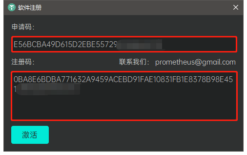
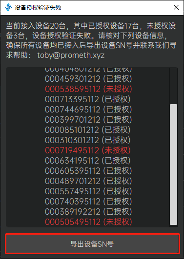
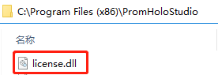

PromHoloStudio 使用教程
PromHoloStudio简介
PromHoloStudio软件是由深圳普罗米修斯视觉技术有限公司开发的软件系统，用户结合配套提供的全息容积视频拍摄影棚，可以方便的进行人体容积视频的本地采集和后续编辑等相关操作。
PromHoloStudio功能模块
准备工作
软件注册
用户初次使用本软件时将弹出软件注册弹窗，请将弹窗展示的软件申请码通过电子邮件(toby@prometh.xyz)或者其他方式提供给我们。核实相关信息后，我们将把对应的软件注册码发送给您，请将其粘贴到注册弹窗的注册码输入区域，点击激活按钮即可完成本软件的激活注册。

相机授权
如果用户全息容积视频拍摄影棚的相机设备发生变更，打开相机时将弹出相机设备授权弹窗，请依照弹窗指引，将接入相机的设备SN号导出并将其通过电子邮件(toby@prometh.xyz)或者其他方式提供给我们。核实相关信息后，我们将把对应的相机授权文件(license.dll)发送给您，请到本软件安装目录下更新替换相应文件即可完成相机授权。
 
开始使用
新用户初次使用本软件时将按照 设备调整 > 设备标定 的流程完成基本的系统使用初始化工作，待 设备标定 完成后，用户可以使用 Holo录播 模块进行人体容积视频素材的本地录制，然后使用 录播编辑 模块完成人体容积视频素材的预览、编辑和导出。